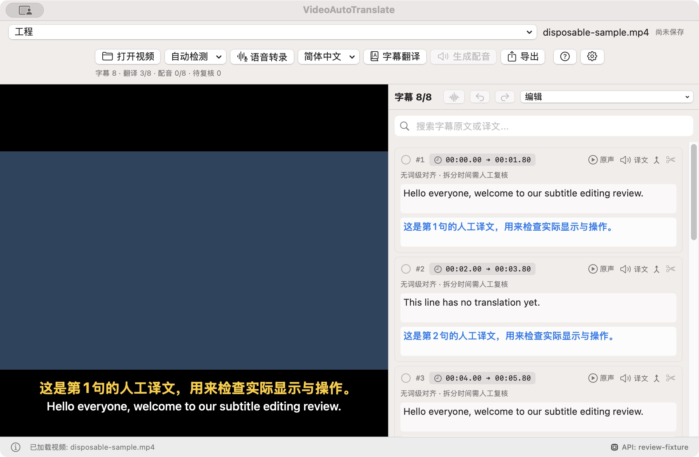

改一句，不必重做整片
逐句试听，局部重新配音。修改原文时标记译文待复核，导出前完成校对，让每次调整有迹可循。
从一段本地视频，到双语字幕与多语言配音。
识别、翻译、校对、试听与导出，在 Mac 上一气呵成。
macOS 14+ · M 系列芯片 · 内含 Python 运行环境，识别模型需另行下载

从原片，到成片
让自动化处理重复工作，
把表达与节奏交给你的判断。
打开本地视频，用 Qwen3-ASR 识别语音，配合 ForcedAligner 获取词级时间戳。先听清原话，再开始翻译。
连接 Ollama 或在线 OpenAI 兼容服务。逐句对照原文与译文，搜索、拆分、合并，让字幕表达更准确。
选择音色，实测配音时长，让同语境的相邻句子共享时间。试听并确认时间轴，保持每组开头与结尾同步。
导出 SRT、WebVTT 或 MP4。选择双语或单语字幕，搭配译文配音、原声压低叠加或原始音轨。
只需要字幕？跳过配音即可导出。保存工程，下次接着制作。
为细节留出空间
逐句试听，局部重新配音。修改原文时标记译文待复核，导出前完成校对，让每次调整有迹可循。
在局部语境内分配时间，短句自然留白，必要时适配语速。匹配结果用于后续试听和导出，避免重复调整。
可使用纯译文配音，也可在配音时压低原声。叠加模式仍包含原人声，目前不提供人声分离。
按你的方式工作
清楚每一步在哪里完成，
选择适合你的制作方式。
| 环节 | 本地方案 | 在线方案 |
|---|---|---|
| 语音识别 | Qwen3-ASR + ForcedAligner | — |
| 字幕翻译 | Ollama | OpenAI 兼容服务 |
| 语音合成 | macOS 系统音色 | Edge TTS |
| 视频导出 | macOS 原生媒体处理 | — |
提前下载模型和系统音色，使用本地 Ollama 与系统 TTS，可离线完成流程。在线翻译与 Edge TTS 需要联网；相关字幕文本会发送给所选在线服务。
下一段视频，从这里开始
当前应用使用 ad-hoc 签名，未经 Apple 公证。首次打开说明见安装指南。